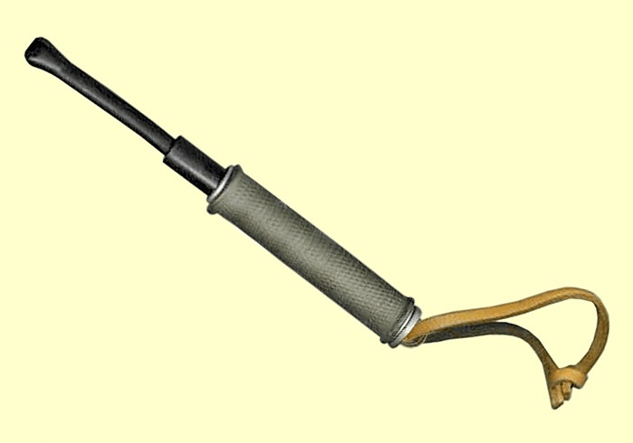
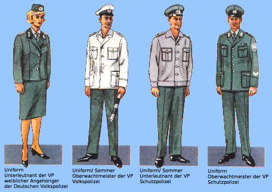
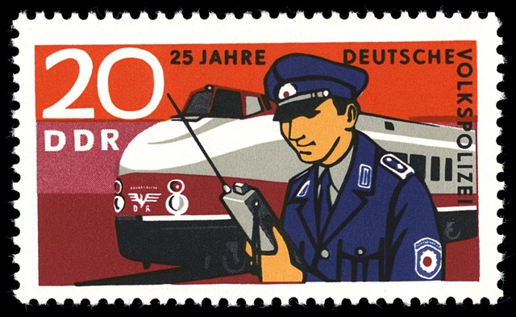

Overview
This section provides an overview of the People's Polices's history, including its role and significance in the former German Democratic Republic.
The People's Police was the national police force of the German Democratic Republic.
Originally
founded in 1945 it would officially become the People's Police in 1949.
It is not to be
confused with the Kasernierte Volkspolizei which was the precursor to the Nationale Volksarmee.
Uniforms
Uniforms differed depending on the branch the officer was in as well as their rank.
Protection Police - Schutzpolizei (included waterway police and transport police although transport had a different uniform)
The standard Volkspolizei (VoPo) uniform consisted of a green jacket, trousers, tie, hat and sometimes a leather
belt (although it was uncommon outside of parades).
Equipment included a pistol holster, cuffs, whistle (green lanyard in jacket pocket),
telescopic baton (hidden from view
in jacket pocket) and map case.
From 1975 officers could be seen carrying a UFT 721 radio
attached to a UBT 70 control panel - it would usually be worn on the right side of the officer.

Credit for image goes to this page.

Baton which would be inside jacket pocket.
Credit for image goes to this page.

Credit for image goes to this page.
Traffic Police - Verkehrspolizei
Here we can see that traffic police wore a white hat/shirt and carried a traffic baton.
This
baton was battery operated (to allow for illumination in darkness) and made of plastic.
Transport Police - Transportpolizei
Credit for image goes to this page.
_1970,_MiNr_1582.jpg){kind=link}
Here we can see that transport police wore a blue hat/shirt/patch.
Real life photos of the
transport police are rare but this stamp shows what they would have looked like.
The transport police were responsible for monitoring all major train stations and also checked passengers on domestic trains near the border with the Federal Republic of Germany.
They were also tasked with accompanying the transit trains that ran between West Germany and West Berlin.
Summer - Sommer
In summer officers were permitted to ditch the jacket and only wear their shirt.
(Potentially just higher ranks however as most images of what seems summer shows full uniform in use)
N/A
This section focuses on.
N/A
This section delves into.